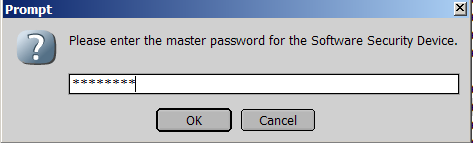
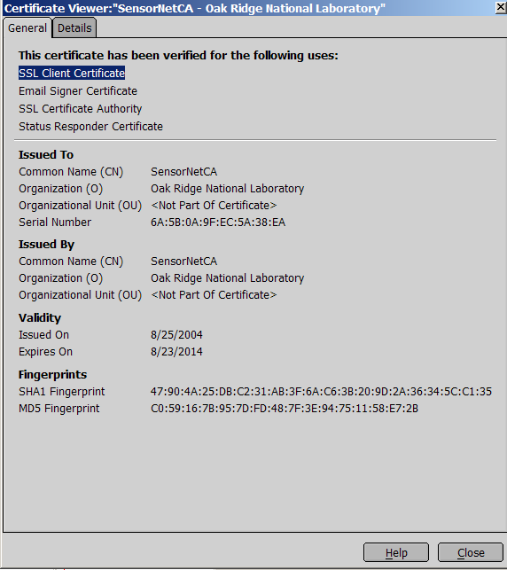
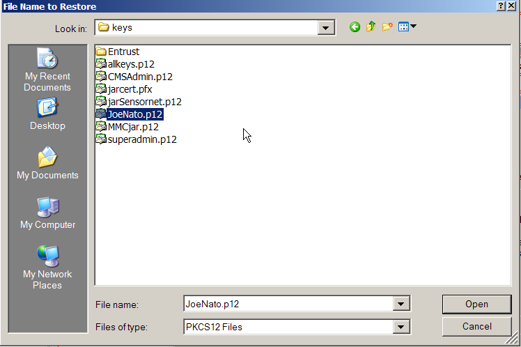
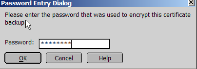

Contents
|
|
|
|
Accessing your
certificates
|
In Mozilla/Netscape 7.x,
certificates are managed from the Edit
Menu by selecting Preferences.
The screen in Figure 1 will appear.
|
|

Figure 1.
|
|
Click the Manage Certificates button to
open the Certificate Manager (Figure 2).
|
|

Figure 2.
|
|
Your certificate will appear
under Oak Ridge National Laboratory.
|
|
Exporting
certificates from Mozilla (Backup)
|
| The first thing you want to do
is to export your certificate so that it is backed up in
a safe place, and also so that you can then import it into other
browsers on this or other computers. Select you identity as shown above
and click the Backup button.
A dialog box will come up asking you where to store the key (Figure 3).
The default for Mozilla id to use the industry-standard PKCS #12 format
with the extension ".p12". |
|

Figure 3.
|
|
When you click the Save button,
a password box will pop up asking you for the password for the Software
Security Device (Figure 4). This is the password you should have set
for Mozilla to allow it to store everything securely by clicking
Master Password in Figure 1.
|
|

Figure 4.
|
|
| Next, you need to enter a
password to protect the private keys in the new exported certificate
file (Figure 5). Be sure to choose a good password. -- at least 8
characters including letters, numbers, and special characters, and no
dictionary words. Click OK and
the certificate along with its private key is exported securely. Be sure to copy your
exported certificate to a floppy or a CD so that it is stored
off of your computer in case you need to rebuild it, loose a hard
drive, etc. |
|

Figure 5.
|
|
Trusting the
SensorNet Certificate Authority
|
The SensornetCA certificate
should have been automatically imported into Mozilla when you generated
your SensorNet certificate. Click the Authorities
tab in the Certificate Manager (Figure 2) to look for the
SensorNet Certificate Authority (Figure 6). It will be listed under Oak
Ridge National Laboratory. In the event that the SensorNetCA
certificate is missing, you can import
it manually.
|
|

Figure 6.
|
|
Highlight the SensorNetCA entry
and click the Edit button to
be able to trust this certificate forall its purposes (Figure 6).
|
|

Figure 7.
|
|
If you wish, you can also look
at the SensorNetCA certificate properties by clicking the View button
as shown in Figure 8.
|
|

Figure 8.
|
|
Importing
a certificate into Mozilla
|
| Return to the Your Certificate tab in Figure 2 and
Click the Import button. A
file dialog will appear (Figure 9). Both .p12 and .pfx files can be
used for import |
|

Figure 9.
|
|
After you select the file to
import, you will be asked for the password for the Software Security
Device which will be used to store the certificate. This is the
same as in Figure 4. Then you will be asked for the password that was
used to protect the certificate (Figure 10). This is the password you
used to protect the key file when you exported it in Figure 5. Your
certificate will now appear in the certificate cache.
|
|

Figure 10.
|
|
These same operations would take
more than twice as many steps if you did them in Internet Explorer!
|